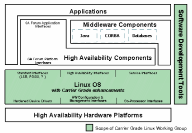

|
|
| HOT TOPIC: Carrier Grade Linux |
(Updated Feb. 10, 2005)
Carrier Grade Linux (CGL) stands among Linux's greatest success stories, proving that industry groups can work together effectively on open source projects that broadly benefit entire markets. This "Hot Topic" list follows Carrier Grade Linux from concept to specification releases, and includes CGL overviews, product and partner announcements, and more.
The CGL specification is maintained by a working group at the Open Source Development Lab (OSDL) comprised of representatives of major telecom companies as well as telecom-targeting hardware and software vendors. The specification defines requirements for Linux systems in telecom systems. It builds on the Linux Standards Base, mainly adding requirements that enhance reliability and security, resulting in "hardened" Linux systems capable of the kind of robust performance expected of "carrier grade" systems.

OSDL's Carrier Grade Linux architecture
Various technical documents on CGL are available on OSDL's website.
This Carrier Grade Linux reading list includes:Stories within each section are listed in reverse chronological order, with the newest stories listed first. Enjoy . . . !
ODSL announcements about Carrier Grade Linux
- OSDL releases version 3.0 Carrier Grade Linux spec -- Feb. 9, 2005 -- The Open Source Development Labs (OSDL) today released version 3.0 of the Carrier Grade Linux Requirements Definition (CGL 3.0) for developer evaluation. CGL 3.0 is divided into six functional areas: high availability, serviceability, performance, clustering, standards and hardware.
- OSDL sponsors high-availability Linux project -- Nov. 4, 2004 -- The Open Source Development Labs (OSDL) has gotten behind an open source Linux project founded by MontaVista. The OpenAIS project aims to meet the Service Availability (SA) Forum's high availability specification for Carrier Grade Linux, enabling systems to achieve 99.9999 percent uptime despite network and other failures.
- OSDL releases blueprint for next-gen Carrier Grade Linux -- Oct. 10, 2003 -- The Open Source Development Lab (OSDL) this week announced availability of its blueprint for the next generation Carrier Grade Linux: "OSDL Carrier Grade Linux Requirements Definition version 2.0 (CGL 2.0)." OSDL says the CGL 2.0 requirements definition, which was developed with key contributions from leading Linux distribution companies, will offer major advances in security, high availability, and clustering.
- OSDL achieves Carrier Grade Linux project milestones -- Aug. 13, 2002 -- OSDL's Carrier Grade Linux Working Group today delivered the Carrier Grade Linux Requirements Definition V1.0 and Carrier Grade Linux Architecture Specification V1.0. The CGL Requirements Definition incorporates comments from the industry and the developer community received through the OSDL developer site. The CGL Architecture Specification provides an introduction to the key concepts and capabilities of each of the major features to be provided by OSDL CGL Version 1.0.
- OSDL releases Carrier Grade Linux docs, launches developer website -- Jun. 28, 2002 -- Delivering on its Carrier Grade Linux (CGL) roadmap, the Open Source Development Lab (OSDL) today announced that a number of milestones have been achieved, providing materials that are now available for input from the Open Source development community.
- Non-profit lab launches "Carrier Grade Linux", "Data Center Linux" projects -- Jan. 30, 2002 -- The 22-member non-profit Open Source Development Lab (OSDL) today announced a pair of technical working groups aimed at enhancing the suitability of Linux for telecommunications and datacenter infrastructure applications. The two groups, called the Carrier Grade Linux Working Group and the Data Center Linux Working Group, will provide "vision and guidance" to "encourage the development of whatever commercial and open standard components are needed on top of Linux to implement required platform functionality" for their respective market segments.
- OSDL to announce "Carrier Grade Linux" activity -- Jan. 25, 2002 -- The Open Source Development Lab (OSDL) is holding a press conference at LinuxWorld in New York, next week. The Lab issued a brief news advisory indicating that it will announce "new members and significant new activity in support of Carrier Grade and Data Center Linux", and will be held at 11:00 a.m. on Wednesday, January 30, 2002, in the Javits Center Room #1E05 (immediately following the keynote address).
General articles about Carrier Grade Linux
- The benefits of modular communications platforms -- Feb. 10, 2005 -- Economic pressures are driving telecom equipment manufacturers to abandon proprietary platforms in favor of modular, standardized architectures that reduces costs and development time, according to a new Intel whitepaper. The paper reviews Intel's efforts to standardize multiple levels of telecom infrastructure, with technologies such as AdvancedTCA and Carrier Grade Linux.
- Spotlight on Carrier Grade Linux -- Open Standards, Solutions, Compliance -- Dec. 7, 2004 -- This whitepaper from TimeSys discusses Carrier Grade Linux (CGL), and changes in the CGL 2.0 requirements document released last fall. It also discusses CGL 2.0's self-registration process for vendor compliance, which TimeSys completed first, among CGL vendors.
- Linux, AdvancedTCA emerge as telecom standards -- Jun. 22, 2004 -- Linux and AdvancedTCA (ATCA) are emerging as open industry standards that the telecom equipment industry will embrace as it migrates away from proprietary software and hardware architectures in its quest for faster time-to-market and reduced costs.
- Carrier Grade Linux gaining traction, OSDL reports -- Jun. 17, 2004 -- Members of the Open Source Development Labs (OSDL) will discuss the value of Carrier Grade Linux (CGL), and the growing use of Linux in the communications industry, during a panel discussion at the SuperComm tradeshow in Chicago. According to the OSDL, 22 major companies participate in the development of CGL.
- Linux, open hardware standards define telecom's future -- Apr. 15, 2004 -- EDN Magazine has published a detailed technical article about AdvancedTCA, an architecture standard for embedded telecommunications systems. The article also briefly discusses an open software standard for telecom systems, Carrier Grade Linux.
- Linux surging in telecom, industrial automation -- Mar. 04, 2004 -- Venture Development Corporation (VDC) has released summary findings from studies examining the use of commercial operating systems and development tools in the telecommunications and industrial automation markets. The reports find Linux "making inroads" in telecom.
- Runtime patching for high availability with carrier-grade Linux -- Oct. 30, 2003 -- An article at RTC Magazine by John Mehaffey of MontaVista discusses runtime application patching, a method of modifying running applications on systems that can not be restarted due to availability requirements. The technique can be used to upgrade software, fix bugs, or even to temporarily add debugging routines.
- Carrier Grade Linux assists Euro air traffic control -- Jul. 29, 2003 -- C.N.S. Systems AB (Linkoping, Sweden) announced that it has used MontaVista Linux Carrier Grade Edition as the operating system platform within the ground station portion of a new air traffic control system in Europe.
- Carrier Grade Linux: What you need to know -- Aug. 27, 2002 -- In this online EE Times article, John Mehaffey (of MontaVista Software) details the use of Linux in telecom equipment designs. Mehaffey examines Open Source Development Lab's (OSDL) efforts to set standards to bring Linux into compliance for 'Carrier Grade' applications . . .
- DSI: A New Architecture for Secure Carrier-Class Linux Clusters -- Jun. 13, 2002 -- The Ericsson DSI team authored this technology brief explaining 'distributed security architecture' (DSI) that supports advanced security mechanisms. Targeted at telecom applications running on carrier-class Linux clusters, the DSI team offers a great overview in this online Linux Journal article . . .
- A new era: Carrier-grade Linux for Telecommunications -- Apr. 8, 2002 -- This whitepaper by MontaVista Software's Glenn Seiler provides an introduction to the emerging use of Linux as a "carrier grade" operating system platform in public network telecommunications products. Seiler explains why Linux is rapidly becoming the OS of choice in the telecom equipment industry and outlines the key requirements for what he calls "Carrier-grade Linux . . .
CGL-related product announcements and pre-announcements
- GoAhead rev's high availability middleware for Linux -- Nov. 1, 2004 -- GoAhead has updated its Linux-oriented high availability (HA), systems management, and distributed messaging middleware. SelfReliant 3.1.1 is easier to use, performs better, and offers new tools, the company says. Additionally, it is the first HA middleware to support the SA Forum's (Service Availability Forum's) HPI B (hardware platform interface B) specification.
- AdvancedTCA Linux server does shelf management on telecom switches -- Nov. 1, 2004 -- RadiSys expects to ship an AdvancedTCA server that handles shelf management in software on telecom switches, freeing up an extra slot for "revenue generating services," the company says. The Promentum Sys-6000 runs Carrier Grade Linux, and targets TEMs (telecom equipment manufacturers) building products such as call centers, HLR/VLRs (home/visitor location registers), authentication servers, and SGSNs (serving GPRS support nodes).
- New high-availability middleware for Linux -- Sep. 7, 2004 -- Continuous Computing has ported its high-availability middleware for "hot standby" servers to Linux. UpSuite High Availability (HA) is application-transparent, for easy installation and maintenance, the company says, and is optimized for Xeon and Pentium processors on AdvancedTCA, CompactPCI, and rackmount servers.
- Sun warms to ATCA, Carrier Grade Linux -- Sep. 7, 2004 -- Sun Microsystems will support Carrier Grade Linux (CGL) on a forthcoming family of servers that will comply with the ATCA (advanced telecom computing architecture) standard, it says. Sun's adoption of CGL and ATCA affirms that the telecommunications industry is evolving from proprietary systems toward open industry standards.
- Open source embedded database regains commercial, community support -- Aug. 10, 2004 -- A company in Bellevue, Wash. is supporting an embeddable open source database to promote its consulting services and embedded database development community. ITTIA offers several levels of support for db.* (pronounced "dee bee star"), a lightweight C-language database with a 20-year pedigree targeting set-top boxes, telecom, and other embedded uses.
- MontaVista, MySQL collaborate on Carrier Grade databases -- Aug. 03, 2004 -- MontaVista and MySQL say they have jointly validated and will collaboratively market the MySQL and MySQL Cluster databases on MontaVista Linux Carrier Grade Edition (CGE) and Professional Edition. The companies will demonstrate their joint solution at this week's LinuxWorld Expo in San Francisco.
- MontaVista carrier grade Linux gains high-availability database -- Jul. 20, 2004 -- A version of Sleepycat's high availability embedded database has been certified for use with MontaVista Linux Carrier Grade Edition 3.1 (CGE). Sleepycat's Berkeley DB High Availability (HA) 4.2 uses single-master replication to offer a scalable, fault tolerance enterprise database. Like CGE, it targets telecom and network equipment makers.
- TimeSys stakes out Carrier Grade Linux 2.0 claim -- Jun. 21, 2004 -- TimeSys says it will ship a version of Linux compliant with the Open Source Development Lab Carrier Grade Linux (CGL) 2.0 specification before September. The OSDL's CGL specification defines features and functionality required by equipment running Linux in the telecommunications market.
- No. 2 telecom RTOS vendor strolls down Tux lane -- Apr. 27, 2004 -- Number-two telecom real-time operating system (RTOS) provider Enea Embedded Technology has partnered with embedded tools specialist Metrowerks on a complete development environment and OS package for telecom equipment designers wishing to combine Linux with Enea's proprietary RTOSes. The package includes Linux and tools from Metrowerks, which will provide second-line support.
- Modular, open, telco "Call Server" runs embedded Linux -- Feb. 17, 2004 -- European telecommunication equipment supplier Iskratel has chosen Carrier Grade Linux and a modular, open-standards-based hardware platform from Intel for its SI2000 Call Server (CS), a softswitch that serves as the "nerve center" of its next-generation platform for Class-4 and Class-5 telecommunications services.
- Telecom control-plane software supports carrier-grade Linux -- Nov. 03, 2003 -- Multi-carrier, multi-vendor network control plane software maker Elematics says its Intelligent Network Control Plane (INCP) software will support MontaVista Linux Carrier Grade Edition (CGE) on Intel processor-based platforms. Elematics says it is providing INCP on CGE in response to demand from customers seeking to lower costs with Linux/Intel-based systems.
- MontaVista unveils enhanced carrier grade Linux -- Oct. 13, 2003 -- MontaVista Software announced the next version of its carrier grade Linux operating system and development environment today at ITU Telecom, a worldwide telecommunications conference being held this week in Geneva, Switzerland.
- Intel net processors, Linux power new Radisys telecom hardware -- Sep. 18, 2003 -- Radisys unveiled two processor boards and an integrated system at the Intel Developer Forum (IDF) in San Jose, CA this week. According to Radisys, the trio of new products -- all designed to do heavy lifting in telecom/datacom applications
- CG Linux powers new NEC telecom servers for 3G mobile services -- Sep. 11, 2003 -- NEC has unveiled a new Carrier Grade (CG) Linux based telecom platform intended to support mobile operators' growing appetite for large-volume IP packet transmission capabilities to deliver video streaming and GPS (Global Positioning System) services to third generation (3G) mobile handsets. The devices are being evaluated by NEC customer NTT DoCoMo for possible use in its FOMA service network, which NEC calls the most advanced 3G network service in the world.
- GoAhead first with SA Forum-compliant middleware -- Aug. 14, 2003 -- On Aug. 4, GoAhead Software became the first software member of the Service Availability Forum (SA Forum) to announce middleware with support for the APIs comprising the SA Forum's Hardware Platform Interface. GoAhead expects to deliver a beta version of its SelfReliant high availability middleware with SA Forum compliance.
- MontaVista releases carrier-grade Linux for PowerPC -- Aug. 04, 2003 -- MontaVista Software announced its first carrier-grade Linux support for PowerPC processors. The initial PowerPC processors being supported by MontaVista Linux Carrier Grade Edition (CGE) include IBM's PowerPC 440GX, 440GP, and 750FX processors, which are being used in telecommunications, networking, and network storage applications, MontaVista said.
- New HP carrier-grade telecom server boasts Linux OS -- Jun. 05, 2003 -- HP announced a new "standards-based" carrier-grade server for telecom network equipment providers (NEPs) and operators who supply fixed and mobile communications services. The model cc3310 server is based on dual 2.4-GHz Intel Xeon processors running Red Hat Enterprise Linux AS 2.1. The system is certified to NEBS Level 3 standards and is suited to a variety network applications including media gateways, signal gateways, media servers, and soft switches, HP said.
- SuSE rolls out carrier grade version of its Linux distro -- -- SuSE Linux announced a carrier grade Linux (CGL) edition of its server-oriented Linux operating system. SuSE's new CGL edition was developed in conjunction with HP, IBM, and Intel, and initially supports Intel-based hardware platforms, the company said.
- New software for fault-tolerant Linux-based systems -- Apr. 28, 2003 -- Eternal Systems unveiled a new software product for adding high availability and fault-tolerant capabilities to Linux-based systems requiring "five-nines" (99.999%) or greater service availability, at the Embedded Systems Conference in San Francisco last week.
- Berkeley DB now supports Carrier Grade Linux -- Mar. 17, 2003 -- Sleepycat Software says the latest version of its popular Berkeley DB database software represents the first database support for Linux operating systems compliant with the Open Source Development Labs (OSDL) Carrier Grade Linux (CGL) 1.1 feature set.
- MontaVista boasts first OSDL-compliant Carrier Grade Linux -- Jan. 21, 2003 -- MontaVista Software says their newly released Carrier Grade Edition 3.0, unveiled today at LinuxWorld in New York, is the first product that fully complies with the Carrier Grade Linux spec released last year by the Open Source Development Lab (OSDL).
- Telecom industry gets a new Carrier Grade Linux distro -- Jan. 16, 2003 -- UnitedLinux today announced plans to integrate the full OSDL Carrier Grade Linux (CGL) 1.1 feature set for UnitedLinux 1.0.
- Red Hat announces "carrier-grade Linux" support -- Dec. 03, 2002 -- Red Hat today announced plans to extend support for carrier-grade Linux applications on Red Hat Linux Advanced Server, an operating system platform designed for mission critical workloads.
- BlueCat Linux to gain OSDL Carrier-Grade Linux specs -- Oct. 21, 2002 -- LynuxWorks today announced support for the specifications of the Open Source Development Lab's Carrier-Grade Linux specification (CGL) v1.0. LynuxWorks also announced plans to integrate the feature set of CGL v1.0 into next-generation versions of LynuxWorks' embedded Linux operating system, BlueCat Linux, in early 2003.
- MontaVista Linux Carrier Grade Edition 2.1 ships -- Jul. 23, 2002 -- MontaVista Software Inc. today announced that MontaVista Linux Carrier Grade Edition 2.1 is available immediately to customers. This is the industry's first commercial, carrier-grade quality Linux distribution. Carrier Grade Edition is targeted for edge and core telecommunications solutions, including applications for the converging IP and voice networks, optical networks, signaling gateways and Voice over IP (VoIP) gateways.
- Intel announces 'Modular Platform Design Guide' for comms industry -- May 28, 2002 -- Intel Corporation today outlined an industry vision for standards-based modular communications servers and equipment that will enable network equipment providers to reduce development costs, speed time-to-market, and increase flexibility in the development of standards-based, blade-based communications servers and solutions.
- CompactPCI supplier adopts Carrier Grade Linux for telecom apps -- May 06, 2002 -- Kontron announced today that it will combine support for Carrier Grade Linux with its Intel-based, CompactPCI products.
- HP: "Linux is the OS of the future in telecom" -- Jan. 29, 2002 -- LinuxWorld in New York, Hewlett-Packard Company (HP) unveiled a range of new Linux-based products and services targeting the Internet infrastructure, telecommunications, and network equipment provider markets. These include a family of Linux-based "carrier grade" servers and a developer's kit for HP Opencall software.
Carrier Grade Linux deals and partnerships
- Kontron, MontaVista partner on AdvancedTCA/CGL bundles -- Nov. 3, 2004 -- Kontron plans to ship MontaVista Software's carrier grade Linux distribution with its AdvancedTCA and Advanced Mezzanine Card (AMC) platforms, beginning later this year. The integrated hardware/software bundles will support "rapidly growing demand" among "top 10" telecom equipment manufacturers (TEMs) for highly-available, standards-based, carrier-grade platforms, Kontron says.
- Another NEP adopts Carrier Grade Linux -- Sep. 9, 2004 -- Yet another NEP (network equipment provider) will ship networking equipment platforms pre-installed with Carrier Grade Linux. Diversified Technology will offer MontaVista Linux Carrier Grade Edition (CGE) on its Targa AdvancedTCA line and on its PlexSys PICMG 2.16 platforms.
- NEP pre-installs CGE Linux for TEMs building VoIP, 3G equipment -- Sep. 9, 2004 -- MontaVista has signed a deal with a network equipment provider (NEP) that supplies standardized hardware/software platforms to telecommunications equipment manufacturers (TEMs). The deal will enable Continuous Computing to ship MontaVista Linux Carrier Grade Edition (CGE) pre-installed on platforms for VoIP (voice-over-IP) and 3G (third-generation) network equipment.
- HP taps Debian for Carrier Grade Linux -- Aug. 17, 2004 -- HP will supply Motorola with a Carrier Grade Linux version of Debian, as part of a long-term deal announced yesterday. HP chose the free, non-commercial Linux distribution over commercial alternatives in order to expedite feature additions, a company spokesperson said.
- Motorola chooses Linux, commodity HP servers for telecom gear -- Aug. 16, 2004 -- HP will supply commodity, standards-based hardware and software -- including Carrier Grade Linux -- for use in Motorola network infrastructure products, the companies have announced.
- MontaVista OEMs OS for Moto telecom platform -- Jun. 22, 2004 -- Motorola will sell telecommunications equipment pre-installed with a telecom-specific version of MontaVista Linux, according to the terms of a "formal OEM relationship" between the two companies announced today. Motorola's "Application-Enabling Platforms" (AEPs) will be available in Q4, 2004, preinstalled with MontaVista Linux Carrier Grade Edition (CGE).
- MontaVista boasts of top NEP customers -- Jun. 22, 2004 -- MontaVista has announced that six well-known network equipment providers (NEPs) use the telecom-specific version of MontaVista Linux. Alcatel, Agilent UK, Ericsson, NEC, Nokia, and Samsung are all active users of MontaVista Linux Carrier Grade Edition (CGE), the company says, along with three other well-known NEPs unnamed in the announcement.
- Wind River partners with Red Hat on embedded Linux distro/support -- Feb. 23, 2004 -- Calling embedded Linux and VxWorks "the standards in device software development," Wind River today announced a dual operating system strategy that adds a newly developed embedded Linux distribution -- "Red Hat Embedded Linux" -- alongside its proprietary VxWorks real-time operating
- World's largest telco joins OSDL -- Feb. 03, 2004 -- NTT/DoCoMo, the world's largest telecommunications conglomerate, with 430 companies and 200,000 employees, has joined the Open Source Development Labs (OSDL) and will participate in the Lab's Data Center Linux and Carrier Grade Linux working groups.
- NEC Soft Joins OSDL -- Jan. 28, 2004 -- The Open Source Development Labs (OSDL), a global consortium dedicated to accelerating the adoption of Linux, today announced that NEC Soft Ltd., one of Japan's leading software development and systems integration firms, has joined OSDL and will participate in the Lab's Data Center Linux and Carrier Grade Linux working group
- HP adds RadiSys to its Carrier Grade Linux portfolio -- Dec. 04, 2003 -- HP announced that it is adding RadiSys high-availability blade servers and technologies to its Carrier Grade Linux portfolio for the telecommunications and service provider market.
- Wind River joins OSDL, mulls Carrier Grade Linux strategy -- Dec. 01, 2003 -- Embedded software giant Wind River announced today that it has joined the Open Source Development Labs (OSDL) and will participate in the Lab's Carrier Grade Linux (CGL) Working Group.
- MontaVista's CGE powers NEC packet core node for mobile operators -- Oct. 07, 2003 -- NEC has selected MontaVista Linux Carrier Grade Edition (CGE) as the operating system for a new NEC AdvancedTCA telecommunications packet core node (PCN) for mobile operators announced several weeks ago. NEC claims the device is the first product to implement the ATCA specification.
- TEMs and NEPs using MontaVista CG Linux gain IP-routing support -- Sep. 16, 2003 -- NextHop Technologies will support MontaVista Software's carrier grade Linux operating system with its NextHop GateD IP-routing software. The combination will give telecommunications equipment manufacturers (TEMs) and network equipment providers (NEPs) in multiple market segments a high-end, pre-tested routing solution on a carrier-grade version of Linux, the companies say.
- TimeSys joins OSDL with focus on Carrier Grade Linux -- Jun. 09, 2003 -- TimeSys announced today that they have joined OSDL with a focus on Carrier Grade Linux (CGL). TimeSys said it is currently working toward bringing its embedded Linux distribution into compliance with the OSDL's CGL specifications.
- Alcatel adopts Linux for next generation telecom equipment -- Apr. 07, 2003 -- MontaVista Software's Carrier Grade Linux will be used as a building block for Alcatel's next-generation telecommunications equipment that have embedded or real-time constraints, according to an announcement made by the two companies today.
- Telecom protocol stacks support carrier grade Linux -- Feb. 21, 2003 -- MontaVista Software has validated the Hughes Software Systems (HSS) suite of telecom protocol stacks on the MontaVista Linux Carrier Grade Edition (CGE), according to a statement issued by the two companies.
- Carrier grade Linux distro gains SS7, GPRS/3G, VoP protocol stacks -- Oct. 15, 2002 -- Hughes Software Systems (HSS) today announced a partnership with MontaVista Software, whereby the HSS Wireless GPRS/3G, Voice over Packet (VoP), and SS7 protocol stacks will be ported and validated for MontaVista's Linux Carrier Grade Edition (CGE).
- Automated runtime error-detection tool supports carrier grade Linux -- Oct. 08, 2002 -- Parasoft and MontaVista Software today announced that Parasoft Insure++, an automated runtime error-detection tool for C/C++, will support MontaVista Linux Carrier Grade Edition 2.1.
- Intel and Force collaborate on HA, carrier-grade Linux building blocks -- Sep. 03, 2002 -- Force Computers and Intel Corp. are working together on standards initiatives and development of interoperable building-blocks for Modular Communications Platforms (MCPs) that speed the development and lower the cost of equipment for next generation networks.
- Ericsson joins Open Source Development Lab (OSDL) -- May 21, 2002 -- Open Source Development Lab (OSDL) today announced that telecommunications industry leader Ericsson has been added to its roster of members aligned to guide Linux development for the telecommunications market segment. Ericsson will participate in the OSDL Carrier Grade Linux Working Group established earlier this year.
- Red Hat supports 'Carrier-grade' messaging software -- Mar. 21, 2002 -- Glenayre Technologies, Inc. today announced it is one of the first companies to offer carrier-grade messaging solutions on the Linux operating system. Red Hat will provide consulting, engineering, development, and customer services and support to help Glenayre implement Versera Solutions on the Red Hat Linux operating system.
 |
|
|
|
|
|
|
|
 Use of this site is governed by our
Terms of Use
and Privacy Policy.
Except where otherwise specified, the contents of this site are copyright © 1999-2005
Ziff Davis Publishing Holdings Inc.
All Rights Reserved. Reproduction in whole or in part without permission is prohibited. Linux is a registered trademark of Linus Torvalds. All other marks are the property of their respective owners.
Use of this site is governed by our
Terms of Use
and Privacy Policy.
Except where otherwise specified, the contents of this site are copyright © 1999-2005
Ziff Davis Publishing Holdings Inc.
All Rights Reserved. Reproduction in whole or in part without permission is prohibited. Linux is a registered trademark of Linus Torvalds. All other marks are the property of their respective owners.


 news feed
news feed